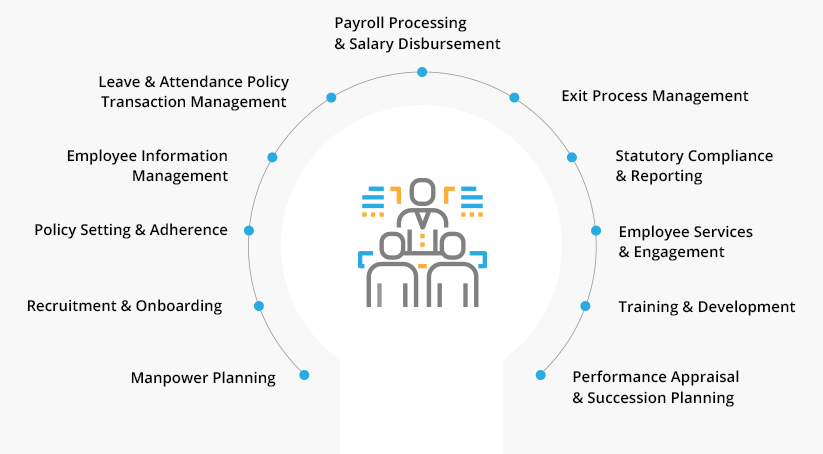
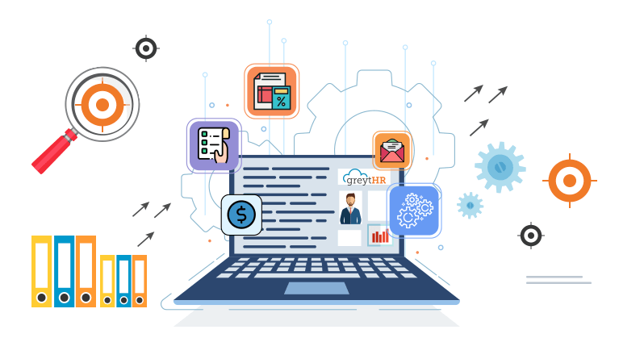
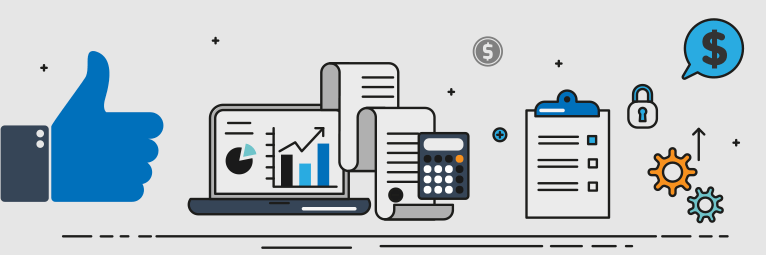

1.What is an HRMS?
An HRMS (Human Resource Management System) is a type of HR software that enables the management of several HR functions through the use of information technology. An HRMS aims to improve the productivity and efficiency of the business through the automation of manual and repetitive tasks. This, in turn, also frees up the HR team’s time which can then be used to address more strategic, business-critical tasks. An HRMS typically covers every element of an HRIS and include the capabilities of human capital management system. The two popular characteristics of a typical HRMS are Payroll and Time & Labor Management (TLM).
Some of the HRMS vendors have [HRIS + (Payroll + TLM) = HRMS] whereas few have [HCM + (Payroll + TLM)]
Typical Functions of HR
Human Resource Management (HRM, or simply HR) is a function in every organization which is designed to increase employee performance in aligning with employer’s strategic objectives. HR is primarily focused on how people are managed within organizations, focusing on systems and policies. HR involves the following sub-functions:

Manpower Planning
Human Resource planning mainly emphasizes the estimation of resource required in order to achieve the desired business results. HR plans can be either short term/immediate or long term/strategic.
Recruitment
Recruiting employees with the right mix of skills and competencies at the right time is a critical task. It includes filling positions through initiatives like promotions, internal job posting and employee referrals.
Onboarding
A candidate who has agreed to join an organization would report to work on a particular day. This day is called the Joining Date. There are a certain set of activities that are done on the first day of the employee joining the organization. These activities are called Employee Onboarding.
Confirmation
After an employee joins, normally, he goes through what is referred to as a Probation Period of 1-6 months. In this period, the organization and the employee review each other and decide on whether each of them would like to continue the association with the other. At the end of the Probation period, the employee would normally go through a confirmation process.
Employee Information Management
One of the important activities done by the HR department is maintaining accurate information about the employees.
- Some of the critical pieces of data that need to be maintained include:
- Name, Gender, Date of Birth, Joining Date, Contact Information, Telephone numbers, email-ids, etc
- Previous employment information
- Information regarding Department, Location, Grade, Reporting Manager, etc., of the current company
- Payment & Statutory information like PF number, ESI number, Income Tax PAN, etc.
Apart from the above, HR also maintains information on Passport, Visa, Nominations, Company Assets, etc. Ensuring that the correct and updated information of the employees is maintained is one of the most critical jobs of the HR Department as a lot of organizational decisions by Managers and Management is taken based on this data.
Leave Policy and Transaction Management
One of the jobs of the HR Department is to formulate or manage the Leave Policy of the organization. Apart from creating the policy, the HR Department is also responsible for maintaining all transactions that happen. It is a statutory (legal) requirement to give Leave to employees in an organization.
Tracking Time and Attendance
On a daily basis, tracking the amount of time worked by an employee, the time when he comes in, the time when he exits, etc., is now drawing a lot of attention of organizations and consequently of HR departments. Apart from using this information for Payroll processing, organizations would also need to generate a number of statutory reports based on the Attendance data.
Salary Changes and Increment Calculations
HR Departments are involved in fixing or revising the salary of employees in consultation with the Business Heads. A typical salary revision is accompanied by a Salary Revision letter. This information is also passed on to the Payroll team who will include it in the next payroll.
Payroll Processing and Salary Disbursement
Payroll processing is an extremely critical activity for both the organization and the employee. It is directly related to one of the core reasons an individual works for an organization apart from statutory compliance. Payroll processing also involves the calculation of all statutory dues (employee and employer contributions) and generating the necessary reports. Besides, employees need to be informed about the salaries paid to them, tax deduction calculations, reimbursement balances, etc. These activities would also fall under the ambit of Payroll processing.
Separation Process
When an employee submits his/her resignation or simply quits the job, it’s usually called a resignation. The HR Department is responsible for ensuring that all the work involved in this process happens. The work involved would be to do an exit interview, ensure that all clearance certificates are issued, handover is done and complete information is passed on to Payroll. Payroll team would then do the Full and Final Settlement for the employee and issue him his final payment. At the end of this process, the Manpower plan would get updated and the depending on the organization’s needs, a Recruitment request would get initiated.
Communication and Basic Employee Services
One of the functions of an HR Department is to enable and ensure a regular channel of communication between the organization and the employees. Employees need to be made aware of various policies like the Leave Policy, Attendance Policy, Travel Policy, Dress Code, etc. Then there could be various rules and regulations which an employee would need to follow in the organization. Any changes to these policies or significant events and other information that would affect the employees would also need to be communicated. The HR Department needs to ensure that all these happen.
Employee Engagement
HR Departments are steadily undergoing a change from being a very transaction-oriented function to a more strategic one. One of the keys to the success of an organization is to have employees whose requirements and goals are aligned to those of the organization. HR Departments play a vital role in building this alignment.
Statutory Compliance
Another critical function of the HR Department is to ensure that the organization is compliant (adheres) with all the relevant laws of the region (State/Country). They need to ensure that they are aware of these laws and take up all activities that are needed to ensure that this is fulfilled.
The various activities that are part of statutory compliance are:
- Ensuring that all relevant employee and labor-related licenses and permissions are obtained
- Onboarding all current and new employees into various schemes as applicable to the organization
- Calculating various Payroll-related deductions from the employee salary based on the applicable laws
- Ensuring that timely reports are submitted to the relevant authorities as per the mandated schedule. Report submission may be online or through the filing of the hard copy.
- Ensuring that when an employee leaves the organization all relevant statutory forms and certificates are issued to him
MIS Reports
HR needs to submit multiple reports to the stakeholders. Some of these reports are presented periodically (weekly, bi-monthly, monthly, etc.) and will be in a pre-defined format. From a stakeholder perspective, this is a critical activity as they would use this in their planning and organization reporting processes.
Training and Development
This function focuses on upgrading the knowledge and skills of the employees. New joinees are trained on the product and processes of the Organizations. Employees are also trained in various soft skills such as team building, leadership skills etc. and behavioral skills such as time management, etiquette etc. The training modules are designed and delivered based on the gap in the skills required and the set of skills which employees possess.
Performance Appraisal and Promotions
Performance evaluation is a systematic activity which helps an organization to determine the extent to which employee is delivering aligned to business results. HR specialists design and implement the Performance Management system (PMS) and maintain the records. This function focuses on the processes of setting up goals for performance as individuals/teams and designing performance assessment methods.
Succession Planning
Succession Planning is the process where an organization identifies employees who can move into positions of higher responsibilities and constantly grooms them so that they are capable of achieving these positions. HR Departments need to identify such candidates, provide them with the required inputs, track and monitor their progress.
Human Resource Development
A Human relations program thereby attempts at enhancing employee motivation and workplace morale through an improved three-way communications and employee participation in the decision making processes. Human resources seek to stress on employee aspects of work instead of technical or economic aspects.
It is easier to talk about doing things than doing them. Many of us want to exercise more, eat more healthy, be kinder to our loved ones, etc., but unless we have specific milestones about how to do this, our intentions do not match our actions. The HR milestones we lay out offer specific steps along the longer journey to HR transformation.
2.The Need for an HRMS
One of the reasons HR functions today are moving towards automation and Data Analytics. With AI becoming the crunch word, everything is powered by having the right information at the right time.
This is not just limited to big organizations but also startups and growing companies are facing additional challenges which can only be streamlined by having a proper system in place.

Data Management
HR data is some of the most sensitive data available within an organization. The earlier approach to storing and managing this data was paper-based, which called for heavy investment in the space required and the time required too posed a significant challenge. Following this came the era of spreadsheets. This method proved to be error-prone and time consuming. The answer to all the above problems came in the form of HRMS, which is, first and foremost, paperless and hence eliminates the problem of being misplaced or incomplete, among others.
An HRMS also allows for the tracking of real-time data across various HR functions such as leave, attendance, and payroll, for instance. This becomes invaluable at a time when employees are increasingly being viewed as customers and employee engagement has become a key part of the organizational puzzle.
Employee Self Service
Employee Self Service refers to an information suite that is available to employees in one central hub. Modern HRMS come bundled with an employee Self Service portal which gives employees access to all their own data. Such a comprehensive view of critical data such as that relating to payroll, leave and attendance not only engenders trust in the organization but proves practically beneficial to employees on several counts. They can now view/download their payslips, view leave updates and real-time attendance data and their tax liabilities for the month or year without the need to approach HR. The freeing up of the HR team’s time for other strategic tasks also improves the efficiency of the business’ functioning.
Easy Reporting
An HRMS allows you to generate a number of predefined statutory as well as MIS reports immediately without set up. On the statutory front, CLRA Report, Shops and Establishment Act Report, and the like, can be accessed in their specified formats without any effort whatsoever. Additionally, powerful filters allow you to generate any reports around the workforce based on a number of parameters on an on-demand basis, usually on the request of senior management. Moreover, HR dashboards give you a quick view of critical information, all on a single screen.
Efficiency and Cost Effectiveness
Modern cloud HRMS come at highly cost-effective price points. The cost benefits you stand to reap from their use far outweigh the meager investment involved in procuring them. For instance, payroll management costs come down significantly once compliance is in place and the risk of being slapped with fines and penalties is taken out the picture. Additionally, the duplication of information is avoided, thus saving time and improving the efficiency of the department. Leave management becomes streamlined and is now capable of being handled between employees and their reporting managers, rather than involving the HR. A similar reality emerges with respect to attendance management too.
Improved Employee Engagement
An engaged employee is a productive employee. With this in mind, it is easy to see how features such as employee Self Service, timely and accurate payroll management, improved leave and attendance management, etc., feed into the organization’s goals by keeping employees engaged and thus ensuring a more productive workforce. HR functions that would have otherwise be chaotic and long-drawn become streamlined and lead to higher employee engagement and satisfaction levels.
100% Statutory Compliance
Compliance with state and central laws plays a major role in the hygiene aspect of any company’s functioning. Why, it can even have serious cost implications if not handled with care, by way of fines and penalties to be paid out to government agencies. Modern cloud HRMS ensure compliance through regular updates of statutory changes to the back end of the software, such that you are not forced to go hunting for the nitty-gritty of legal changes in a constantly evolving legal landscape such as that present in India.
Adopt Best Processes in the Industry
Best practices ensure that you’re at the top of your game given the limitations of your functioning. Adopting best practices improves efficiency, increases productivity, reduces chances of errors, and more. An HRMS is researched and set up in such a way that it incorporates within it the best practices used in the space. A few examples of this include checklists, predefined formats for letters, requests, etc and the like.
Emerging Trends in HRMS
The HR function is moving towards organizational efficiency and predictive analytics. Moreover, the function is moving away from tactical to strategic HR. The relegation of Transactional HR to chatbots and automation is indeed on. Now HR is synonymous with strategic planners in the organization.
The Emergence of Relationship Analytics – Organizational Network Analysis
Social networks that exist within a company helps establish employee connection within the organization. It looks at how internal connections exist between employees in an organization on various social platforms. This analysis can, in turn, see how they can coordinate for more effective response and output. It is essentially a human network inside the company.
PMS
In the recent past, 360-degree feedback was on every HR’s lips. Now, from 360-degree feedback, companies are moving towards a continuous feedback loop. Developmental inputs are also possible on the go for virtual, distributed teams.
Employee Experience
Curated, customized experiences for specific career stages from Onboarding to career development are in vogue today. E-learning too is being pushed as an experience, and there is a move towards self-learning. E-learning is taking on brand new forms such as learning molecules which are mainly tiny units of information offered on the mobile phone for employees, especially those on the move.
Artificial Intelligence
Today, more and more companies are moving towards AI tools for predicting the outcomes of their employee-defined objectives like KRA’s etc. Training of employees on the current technology by using AI to understand the new technologies and show the benefits to the employees and hence increase adoption of new technology.
How to find the right HRMS for you
Ok, so now you get the feeling that an HRMS solution is the need of the moment for you. So now that you have decided, you need to ask the most pertinent question. How do I find the right HRMS for my organization?
The following pointers will be able to guide you in a systematic approach to this solution. Though as a thumb rule if, reducing cost, improving productivity, and engaging your employees are your primary concerns, then sticking to a cloud-based solution would be your best bet.

Setting up Best Practices in HR and Payroll
If you are planning on setting up industry standard best practices or want to revamp your existing HR policies and processes, introducing an HRMS brings in the same as it comes pre-built with best practices incorporated into the product. In SMEs, formal policies and procedures are often missing in the HR and Payroll space. Introducing an HRMS into the organization has the potential to bring in discipline on these fronts.
Cost Implications and Understanding your Requirement
Cloud HRMS come in various forms. While the core features may seem similar, the depth of expertise in each area addressed and also the user experience tends to vary widely. Hence, to choose a software that’s ideal for your needs, you first need to have a precise understanding of your requirements. You need to be very clear on the specific modules and features you want so that you can have a smooth transition. On the pricing front, cloud software by their very nature tends to be highly cost-effective compared to other options such as desktop software available in the market today. Your ROI from cloud software is not something you’d have to be concerned about if you’ve chosen one that meets your needs well.
Employee Self Service is a must for Employee Satisfaction
In an ideal world, no employee should have to chase the HR team to access his/her payroll and HR information. A cloud HRMS renders this possible. Employee self service is primarily an information suite for the employee that gives him direct access to his payslips, tax information, leave and attendance information, and more. What’s more, all this data can be made available in real-time using an HRMS on the cloud. Such availability of information improves employee engagement and satisfaction levels as employees are clear about the hows and whys of their salary to their leave balance and more.
Eliminating Repetitive Manual Tasks with Automation
What an HRMS does, even in its most skeletal form, is automate several tasks which would have otherwise had to be performed manually. Leave and attendance data that had to be checked and re-checked using a muster or Excel is now captured in real-time and displayed to employees automatically. An integrated HRMS ensures that payroll inputs flow in seamlessly into the HR system. These are some of the critical ways in which the use of an HRMS can boost productivity and save time. In this sense, HRMS are, in fact, designed for efficiency.
Uncompromised Customer Support
Suppose you are not in town or currently in a different country and your HRMS system suddenly crashes down. What would you do if you require any technical support in this situation? In the circumstances, you will need 24X7 support service from your software company to attend and address that issue.
Therefore, before you buy any HRMS software, it is quite essential for you to discover their customer support service. You should confirm with them whether they are available for customer support 24/7. Or will they only take calls at a specific time during the day? Also, you should ask whether you will have to wait up after leaving a message for their call back. Answers to these questions might give you the idea of their activeness and emphasis on their after sales customer support.
Customization to Suit your Business Needs
Cloud HRMS has to be configured to suit your needs. Be it leave policies and attendance policies or holiday lists and shift logic, they are flexible enough to be fully customized on these fronts and more, depending on the solution you choose.
HRMS System should be able to scale with your Growth
Given a highly scalable and pay-as-you-go model adopted by cloud HRMS, this is not an area that should concern you. In fact, in our experience, we have seen that the need for scaling often becomes the very reason to opt for a cloud HRMS.
Easy updates and upgrades are available on the back end of the product. You can also easily upgrade plan to go with more functionalities on a need-to basis.
Integration with your Existing Systems
This is also crucial considering direct integration with payroll inputs like attendance/ biometric systems. Also, you might have data flowing into other systems from the HRMS, and today this is available with most cloud-based HRMS with the help of API’s. Integrations with accounting software, attendance and performance management tools are possible.
All in all, a cloud HRMS is the new paradigm of automation in the HR industry. Cost-effective and extremely easy to get up and running, such systems not only improve the efficiency and productivity of your business but also lay the foundations of organizational change.